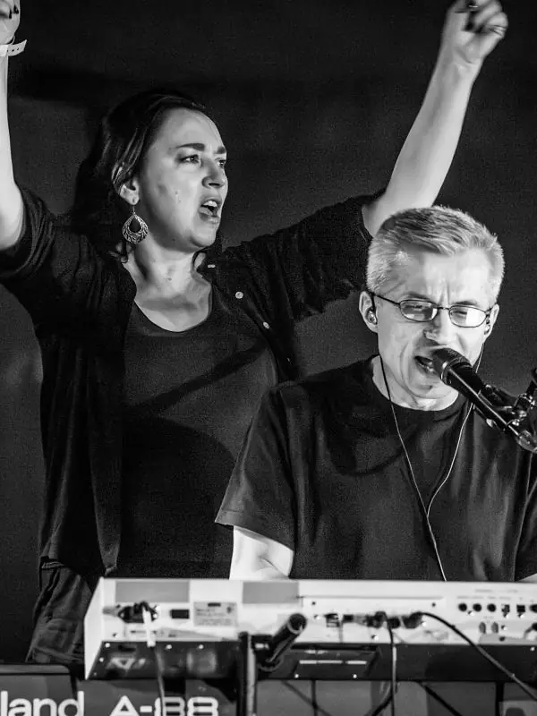
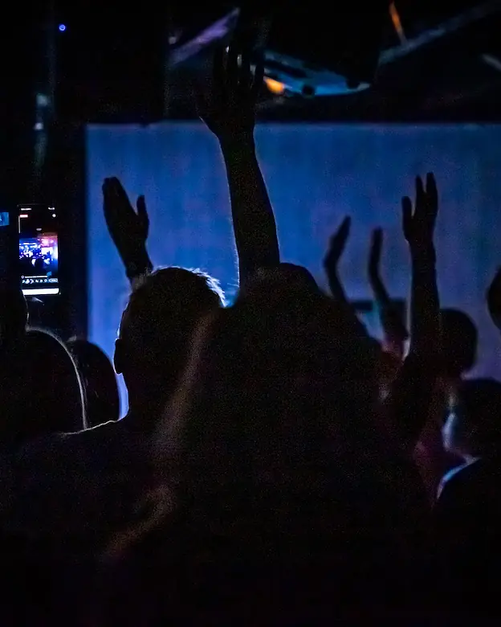
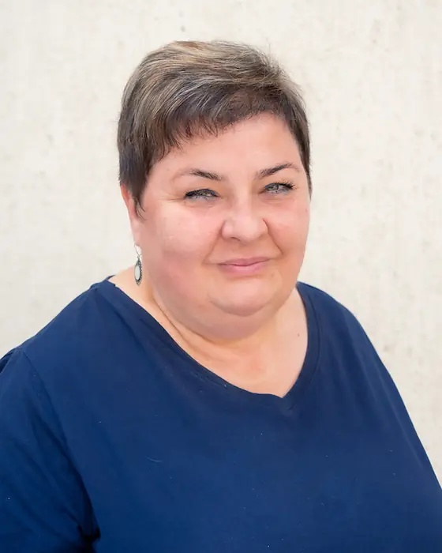

Wspólnota Chrześcijańska MISJA 22:22, Kościół Boży w Polsce
22:22Nazwa nawiązuje do klucza domu Dawidowego z Księgi Izajasza
Klucz, który otwiera na Bożą obecność
MISJA 22:22 powstała w 2002 roku. Jako Wspólnota Chrześcijańska należy do struktury Kościoła Bożego w Polsce. Posługując promujemy prorocze uwielbienie, akcentując Bożą chwałę, wstawiennictwo i walkę duchową.
„Pragniemy widzieć objawioną Bożą chwałę na ziemi, która manifestując się przyciąga ludzi do siebie.”
Chcemy wywyższyć Boga zawsze godnego chwały, wskazywać na Niego i dawać Mu miejsce, które tylko Jemu jest należne. Prowadzimy zgromadzenie do doświadczenia Bożej obecności, która niesie ze sobą uwolnienie od duchowych ciężarów, uzdrowienie duszy i ciała oraz skuteczną przemianę życia.
Oprócz Polski posługiwaliśmy m.in. we Włoszech, w Niemczech, Czechach, Austrii, Ukrainie, Anglii, Szkocji, Indiach, RPA i USA.

Agnieszka i Piotr Płecha prowadzą MISJĘ 22:22 od 2002 roku
Jak działamy
Uwielbienie, nauczanie i muzyka w kościołach, na konferencjach i koncertach, stacjonarnie i przez internet.
Uwielbienie i nauczanie
Prowadzimy uwielbienie i nauczamy na konferencjach, nabożeństwach i spotkaniach uwielbienia.
Szkoły i warsztaty
Prowadzimy stacjonarne i internetowe szkoły oraz warsztaty uwielbienia.
Zespoły kościołów
Szkolimy liderów i zespoły uwielbienia lokalnych kościołów i wspólnot.
Koncerty
Organizujemy i wykonujemy koncerty w miejscach kościelnych i świeckich, z profesjonalnymi muzykami.
Obozy duchowego wzrostu
Organizujemy obozy dla tych, którzy chcą wejść głębiej w relację z Bogiem.
Uwolnienie i uzdrowienie
Konferencje i warsztaty uwolnienia, uzdrowienia, biblijnego tłumaczenia snów i wizji oraz zdrowych relacji.
Młode pokolenie
Angażujemy się w duchowy rozwój młodych przez inicjatywę niepokonani.org.
Muzyka i namaszczenie
Łączymy muzyczną brawurę z duchowym namaszczeniem we współpracy z muzykami chrześcijanami.
Wrocław, luty - czerwiec 2026
Szkoła Proroczego Uwielbienia „Ruch • Dźwięk • Nowa Pieśń”
Pięć sobotnich zjazdów z Dorotą i Kubą Herok (YaDaH) oraz Piotrem i Agnieszką Płecha: uwielbienie ruchem, tańcem, dźwiękiem i nową pieśnią, w grupach tanecznej i muzycznej.
Wrocław, 23 - 26 lipca 2026
Szkoła Duchowego Życia SDŻ 2026
Czterodniowa konferencja MISJI 22:22 we Wrocławiu. Informacje o kolejnych szkołach i konferencjach będą w osobnej zakładce Wydarzenia.
Z naszych spotkań
Uniesione ręce podczas wieczoru uwielbieniaFlagi i sztandary w uwielbieniu, zespół na scenieUwielbienie tańcem z tkaniną przed scenąCzerwona tkanina nad zespołem podczas koncertuPiotr Płecha przy instrumentach klawiszowychWokalistka zespołu podczas uwielbieniaSkrzypek w słuchawkach na sceniePiotr Płecha naucza ze scenyPosługa w IndiachWarsztaty dla zespołu uwielbieniaMłody skrzypek na scenie

Wieczór uwielbienia MISJI 22:22
Zaproś nas do swojej społeczności
Przyjedziemy do Twojego kościoła lub wspólnoty. Przykładowe posługi MISJI 22:22:
Konferencja uwielbienia dla wszystkich wierzącychPiotr Płecha
Warsztaty dla lokalnego zespołu uwielbieniaPiotr Płecha
Posługa na nabożeństwie: uwielbienie, nauczaniePiotr Płecha
Wieczór uwielbieniaPiotr Płecha samodzielnie lub z zespołem
Koncert ewangelizacyjny, m.in. kolędowy i pasyjnyPiotr Płecha lub z zespołem
Warsztaty dla rodziców „Duchowe zagrożenia współczesnej młodzieży”Agnieszka Płecha
Konferencja lub warsztaty biblijnego tłumaczenia snówIwona Krzemińska
Konferencja lub warsztaty uwolnienia i uzdrowieniaIwona Krzemińska
Lider uwielbienia, muzyk, wokalista, kaznodzieja, pastor
W służbie Bogu od spotkania z Jezusem w 1986 roku. Niegdyś gitarzysta basowy m.in. Budki Suflera. Współpracował z Donem Potterem, Suzy Wills, MorningStar Band, Peterem Helmsem i zespołem TGD. Pastor wrocławskiego kościoła „Dom Chwały”.
Agnieszka Płecha
Proroczy wstawiennik, doradca duchowy
Od 2002 roku wspólnie z mężem koordynuje działania MISJI 22:22. Nosi w sercu pasję dla młodego pokolenia, prowadząc młodzież do pełni wolności i dojrzałości w Chrystusie.

Iwona Krzemińska
Misjonarka MISJI 22:22
Doświadczona w służbie proroczej, uwolnienia i biblijnym tłumaczeniu snów, której uczyła się od Johna Paula Jacksona. Prowadziła pierwszą w Polsce internetową szkołę tłumaczenia snów i wizji.
Razem z nami służą Robert i Dominika Wieczorek z kościoła Dom Chwały, realizator dźwięku Wojciech Białoskórski, który wspiera misję od początku jej istnienia, Dorota i Jakub Herok ze służby YaDaH (uwielbienie tańcem) oraz muzycy, tancerze i wstawiennicy z różnych wspólnot w całej Polsce.
Wesprzyj MISJĘ 22:22
Wsparcie modlitewne
Modlitwy przyczyniają się do ochrony posługujących i do wzrostu dziękczynienia (2 Kor 1:11). Jeśli chcesz modlić się za nas regularnie lub okazjonalnie, napisz na biuro@misja2222.pl. Będziemy przesyłać Ci informacje o naszej działalności i potrzeby modlitewne.
Wsparcie finansowe
Jeśli doceniasz działalność MISJI 22:22, możesz wesprzeć nas jednorazową lub regularną ofiarą.
Wspólnota Chrześcijańska MISJA 22:22
19 1140 2004 0000 3102 7745 7220
Wpłaty z zagranicy (EUR, USD): dane na podstronie Wsparcie
Projekt „STUDIO”: budujemy muzyczne studio nagraniowe. Wsparcie budowy i wyposażenia prosimy przesyłać z dopiskiem „STUDIO”.